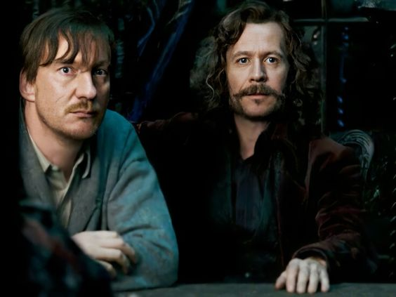
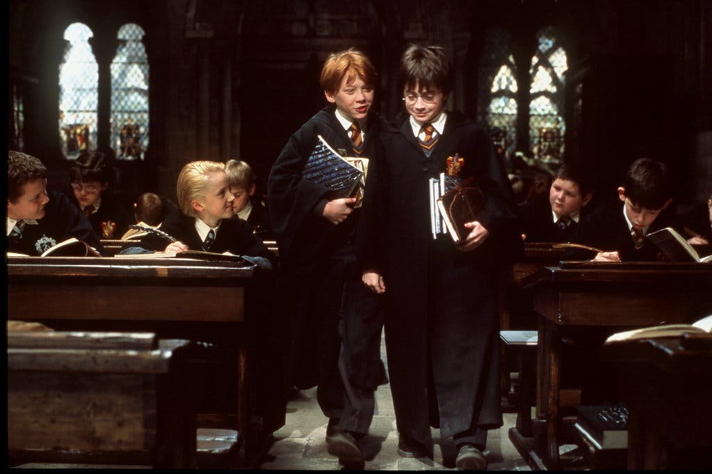
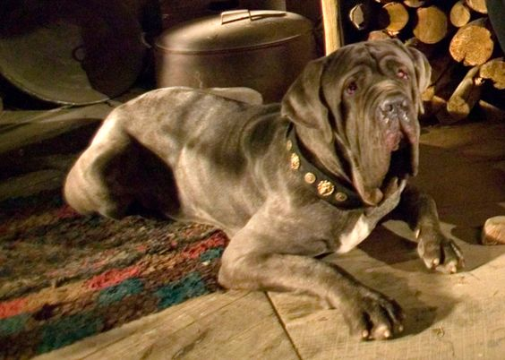
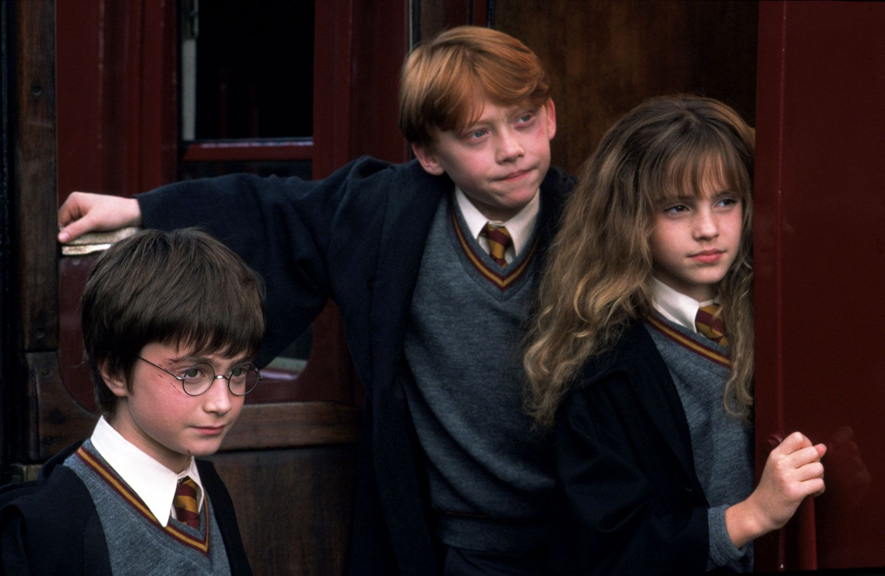
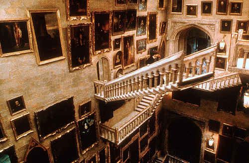
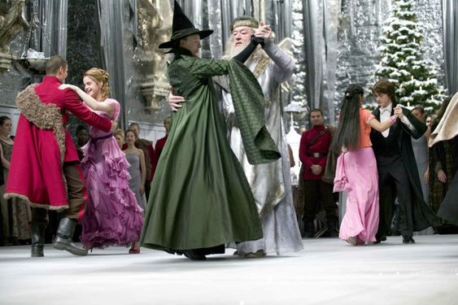
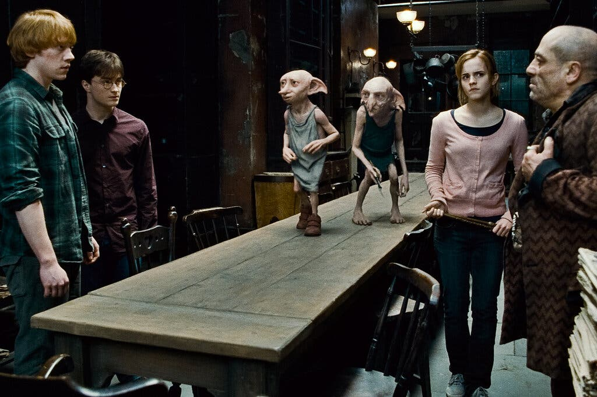
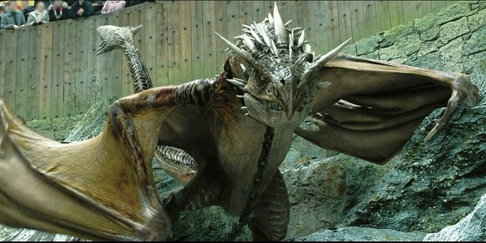
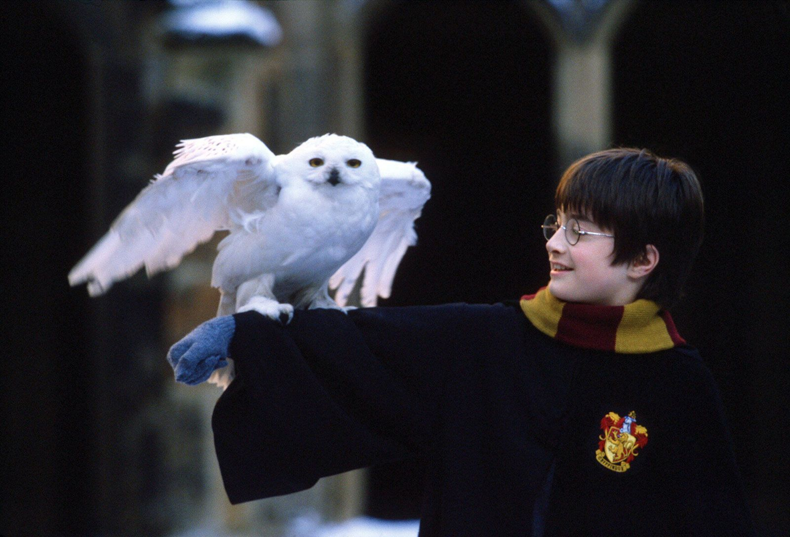
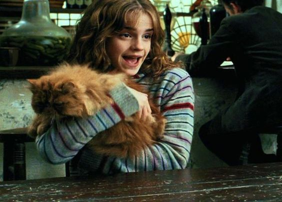

КВИЗ ПО КНИГАМ О ГАРРИ ПОТТЕРЕ
Вопрос 1. Как звали крестного папу Гарри Поттера?

Северус Снейп
Альбус Дамблдор
Артур Уизли
Сириус Блэк
Вопрос 2. Какое заклинание заставляет левитировать объекты в воздухе??

Алахамора
Вингардиум Левиоса
Люмос
Экспелярмус
Вопрос 3. Как зовут собаку Хагрида?

Короста
Клювокрыл
Клык
Крюкохват
Вопрос 4. В какой детской книге есть рассказ о Дарах Смерти?

«Мальчик-с-пальчик»
«Волшебный рог»
«Чудовище Уинделстоунского ущелья»
«Сказки Барда Бидля»
Вопрос 5. Сколько лестниц в Хогвартсе?

50
215
142
118
Вопрос 6. Какое рождественское мероприятие проводится в честь Турнира Трех Волшебников?

Великий Шабаш
Магический Субботник
Святочный бал
Рождественский Пир
Вопрос 7. Кто рассказал Гарри Поттеру о Выручай-комнате?

Добби
Рон Уизли
Гермиона
Альбус Дамболдор
Вопрос 8. Какой дракон достался Гарри Поттеру на Турнире Трех Волшебников?

Перуанский змеезуб
Валлийский зелёный дракон
Румынский длиннорог
Венгерский хвосторог
Вопрос 9. Какое заклятье нужно ,чтобы спастить от дементоров?

Авада кедавра
Экспекто патронум
Круцио
Вингардиум Левиоса
Вопрос 10. Как звали кота Гермионы?

Пушок
Винки
Живоглот
Том
Отправить ответы